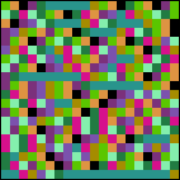
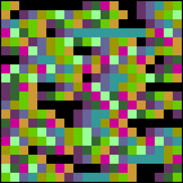

|
|  |
 |
s = 1.9. Chaos over a wider range. |
s = 1.999. Fully developed chaos, and yet some patterns are obvious. For
example, every black square is preceded by a black square or a brown square; every brown
square is followed by a black square or a violet square. |
|